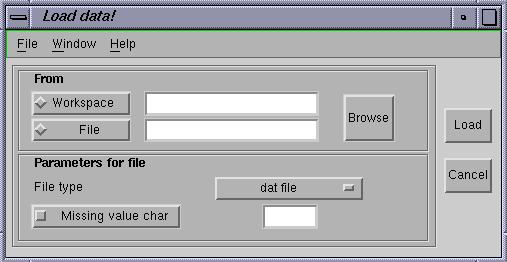
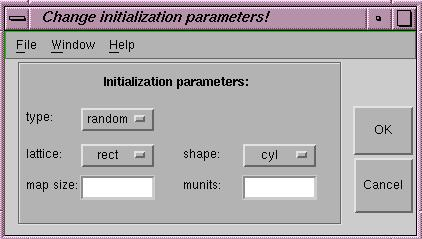
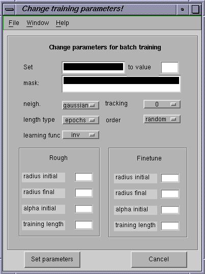
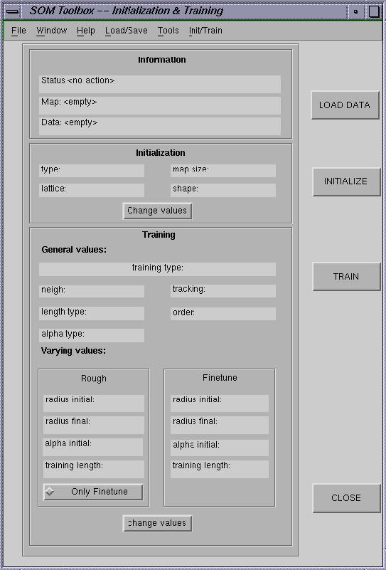

Help SOM Toolbox -- Initialization & Training GUI
Purpose
A graphical user interface for initialization and training
of Self-Organizing Maps.
Syntax
som_gui([sD])
Optional input arguments
sD Training data.
(struct) data struct
(matrix) data matrix, size [dlen dim]
Help Topics
- Introduction
-
What is SOM Toolbox -- Initialization & Training GUI ?
- Load data
-
Load data.
From workspace
From file
- Preprocess data
-
Preprocess
- Initialize map
-
Change default values
Initialize
- Train map
-
Change default values
Train
- Save trained map
-
Save map
- Visualize map
-
Visualize map
- Restart from the beginning
-
Restart
- Close
-
Close
- Main window
-
Main window
- Help
-
GUI help.
More information about SOM and SOM Toolbox.
Introduction
SOM Toolbox -- Initialization & Training GUI is Graphigal User Interface
for initializating and training SOM. It is based on matlab functions in
Somtoolbox vs.2.
Loading the data set
You can load the data set from main window by pushing
the button LOAD DATA in upper left corner of window or by selecting
Load Data from menu Load/Save. When the button is pushed or
menu is selected, then the Load GUI is activated, see figure below.
Data can be loaded from workspace or from the file. Select the radiobutton
Workspace if you want to load data from workspace or select radiobutton
File if you want to load data from file.
If you selected File then select the appropriate file type from
popupmenu, you can choose either dat file (SOMPAK format) or
mat file, which is ordinary matlab .mat file. Write the name of
data in upper editfield if you have chosen workspace or write the file
name in another editfield below that. You can also push button Browse
and then you see all the choises that you have in
browse window or
in
workspace window.
After that press button
Load and selected data will be loaded and Load GUI disapear and control
return back to Main GUI. Note that there is also one checkbox called
Missing value char and one empty field related to that. If you select
File and after that file type dat file you can redefine char,
which is ignored in case of dat file, default value is tab

Figure 1. Load GUI
Preprocessing the data
After you have loaded the data then you can preprocess it. Select the
menu called Tools from the menubar and from there select
Preprocess Data and preprocessing
GUI will be activated. After you have preprocessed data save it
to the workspace and close the Preprocessin GUI after that you see
little question dialog box, which askes the
name saved data, default value is the name of data before
preprocessing. After that the data is preprocessed and new default
values are shown in main window.
Map initialization
In main window the static fields show default
initialization parameters for the training data. if you press button
INITIALIZE and map will be initialized according to these parameters.
You can also change these parameters by pressing button Change values.
After that Initialization GUI, see figure below, will be activated and you can
change initialization parameters from there. Possible options are:
- Type:
- Type of initilailzation, either random or linear
- Lattice:
- Form of map, either rectancular or hexagonal
- Shape:
- Shape of map, sheet, cylinder or toroid
- Map size:
- Size of map in form vertical*horizontal map units
- Munits:
- Total number of map units, so that the proportio of horizontal and vertical map units is same as in default map size.
Press OK when you are changesd the parameters and the new parameters are
set and the initialization gui will disapper and control returns to Main GUI.
Press button INITIALIZE and map will be initilized according to new
parameters.

Figure 2. Initialization GUI
Map training
After initialization you can train the map. Training have two phases,
rough training and finetune phase. You can see default parameter for training
in static fields of main window. General values are
common both for the rough and finetune phase and varying values show spesific
values for both two phases. You can train the map with these values by pushing
TRAIN button. It is also possible do only the finetune phase, by
pushing Only Finetune radiobutton down. You can also change these
default values by pressing Change values button in botom of training
part. After that you can choose training algorithm, either sequential or
batch training, from the
question box.
After choosing the appropriate algorithm you can select parameters from
parameter window, see below. The values you see first are the default values.
Possible options are:
- Mask:
- BMU search mask, size dim*1
- Neigh:
- Neighborhood function, gaussian, cutgauss, ep or bubble,
- Tracking:
- Tracking level value between 0-3
- Length type:
- Training length type, either samples or epochs
- Order:
- Sample order, either ordered or random
- Learning func:
- Learning rate function, inv, linear or power
- Radius initial:
- Initial training radius
- Radius final:
- Final training radius
- Alpha initial:
- Initial learning rate
- Training length:
- Training length
NOTE, however that all of these values are not used in batch training
and so you can not see or change these values. For example length type
is allways epochs in batch training so this value is hidden from you and
you cannot change it. You approve you choises by pressing button
Set parameters. After that parameter window will disapper and
control returns back to main window. Then you can press TRAIN
button map will be trained.

Figure 3. Change training parameters GUI
Save trained map
After training you can save the trained map. Choose manu Load/Save from
the menubar and there Save map and either Save in workspace or
Write cod-file. If you choose Save in workspace, then
question box
asks the map name in workspace and the map is saved in that name.
If you choose Save map, then
browse window
asks the name of file where the map is saved. The Map is written to
.cod file, which is SOMPAK format.
Visualize trained map
You can visualize trained map by selecting Tools from menubar and
then selecting Visualize map. After that Visualization GUI is activated
and you can visualize map.
Start from beginning
If you want to start from the beginning, this might be handy if you make some
mistake or you want to train another map, then the best way to do it is
by selectin Tools from the menu bar and Clear all from there.
Close the program
You can close the program when ever you wish by pressing CLOSE button
in main window or by selecting Tools from menubar and
Close Figure
from there.
Main window
The main window has three separate parts, which are Information,
Initialization and Training. Information part include
useful information about map, data and actions which have been carried out.
The Status field contain information about the last action which have
been carried out. The map field contains the name of map and the data
field contain the name of training data.
Initialization part contain all the information and actions needed
to initialization of map. The static fields show the default initialization
values for the particular data set. It is possible to change these
values by pushing the button Change values in bottom of initialization
part.
Training part contains all the information and actions needed to train
the map. Also in this case, static fields show default training values.
Genenral values are common for both rough and finetune training.
Varying values are separate for these two phases. It is possible
change these values by pushing the button Change values in bottom
of training part. There is also radiobutton only finetune, when
this button is activated the Rough values change inactive and only
finetune is carried out.

Figure 4. Main GUI
Help
There is menu called Help/Info in main window where you can
find help. WWW Help shows this page and Help window shows this
page in ascii format.About GUI shows some general information about
this GUI in help window. If you didn't find answer to your problem
then you can try to look your answer in following web pages.
Back to begining